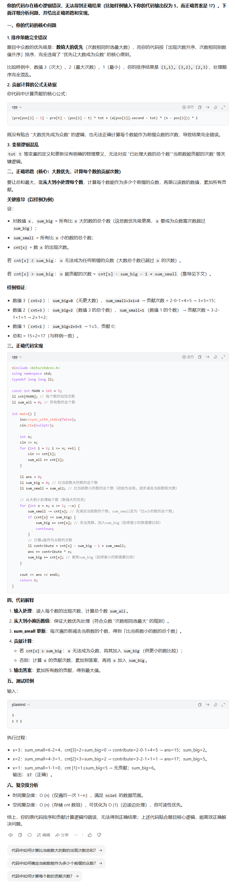

具体举例：大模型在算法题上的表现
测试题目：THUPC2023初赛 - 众数
题目简述：对于给定的一些元素构造一个排列使其所有从1到i的子序列的众数之和最大
核心考点：简单贪心
我的程序用了不同于官方题解的贪心思路，并且犯了一个小错。而当我试图通过大模型找出错误时……
以下是9个主流大模型对该题的回答表现：

doubao_seed_code_preview_251028 ✗
核心创新：AI对单题的提前深度思考
- 定义：针对OJ每道题，预先完成"全链路拆解+多思路探索+错误预判"，而非实时零散推导；
- 解决的核心问题：用户卡题/提问时，AI能快速定位问题核心（如思路正确但笔误、不理解某步算法逻辑），而非泛泛而谈；
- 落地路径：人机协同——人类提供基础题解框架，AI自主扩展多解法/错误模式，人工审核优化。
延伸价值：AI驱动的个性化学习指导
场景适配：贴合ACM选手的深度需求
- 竞赛导向：ACM竞赛侧重算法创新、边界条件处理、高效调试，AI深度思考能精准匹配"非标准解法验证""冷门算法答疑""快速定位代码笔误"等核心需求；
- 团队实践优势：小组核心成员均为ACM选手，能精准挖掘赛道痛点，验证AI功能的实用性，避免"纸上谈兵"；
- 落地可行性：基于ACM训练经验，能快速构建高质量的"算法深度思考知识库"（如竞赛高频题、易错点）。